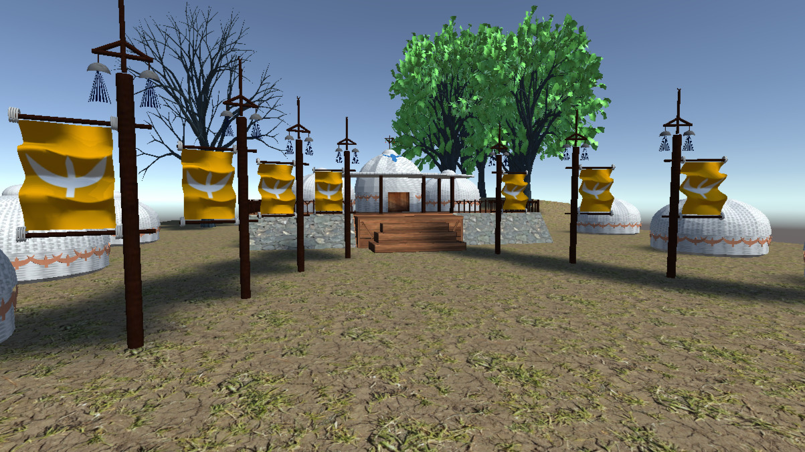
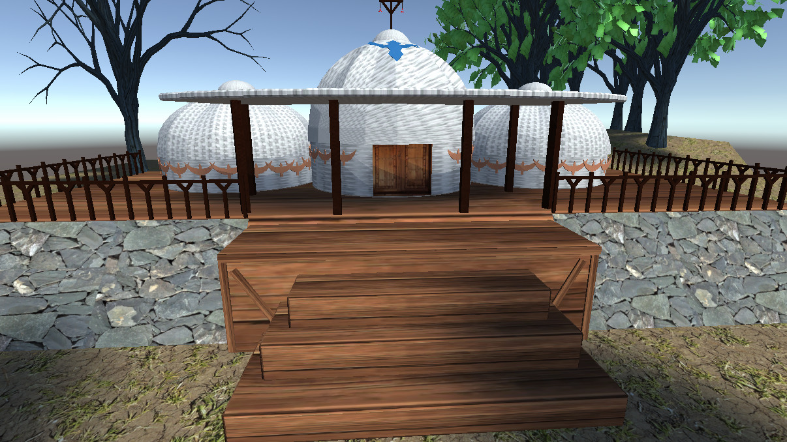
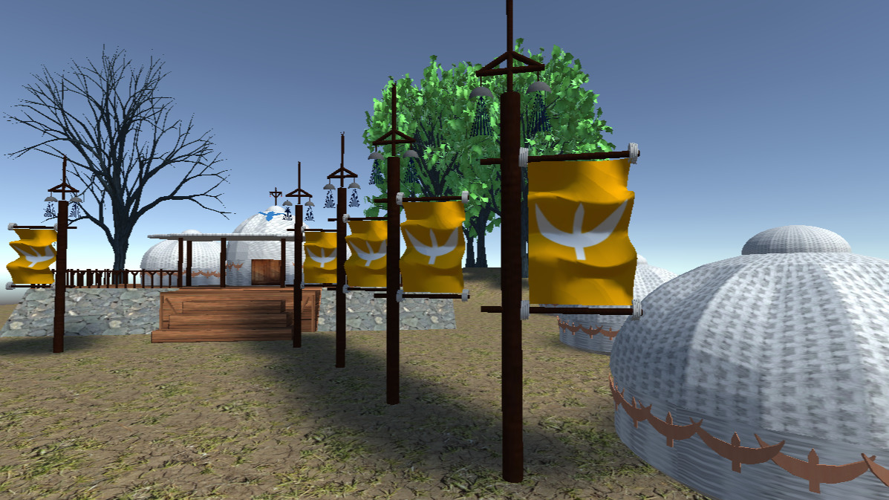
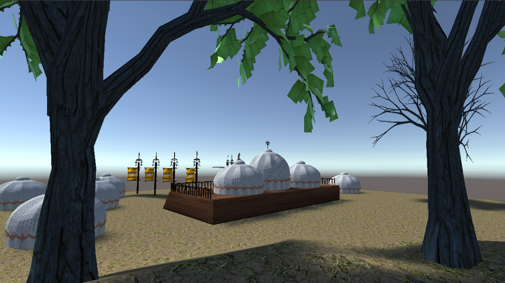

Kayi Tribe




Overview
Kayi Tribe is a historically inspired 3D environment created in Autodesk Maya and presented in Unity as a real time scene. This was my first project using Maya and my introduction to 3D modelling and environment creation.
The goal was to design a small environment based on a historical theme, focusing on asset creation, scene composition and achieving a believable visual style.
Inspiration and Research
The environment is inspired by the Kayi Tribe, one of the Oghuz Turkic tribes associated with the early foundations of the Ottoman Empire under Osman I. Visual references were taken from historical depictions and series such as Diriliş: Ertuğrul and Kuruluş: Osman.
I focused on recreating key elements of the tribe's lifestyle, including yurts, wooden structures, flags and natural surroundings, aiming to capture both cultural identity and environmental authenticity.
My Role
I was responsible for the full production of the environment, including:
- 3D modelling of props and structures in Maya
- Scene layout and environment composition
- Texture application and material setup
- Exporting and presenting the scene in Unity
- Basic optimisation for real time performance
Key Features
- Modular tent structures inspired by traditional yurts
- Custom props including fences, flags, stairs and wooden elements
- Environment composition based on historical references
- Use of real world textures such as wood, stone, cloth and rope
- Terrain shaping and natural asset placement
- Real time scene integration in Unity
Technical Implementation
The environment was built using polygon modelling techniques in Maya, starting from primitive shapes and refining them through vertex manipulation, extrusion and subdivision.
Tents were created by shaping primitive objects and refining their structure to match reference images. Additional details such as roof patterns and structural elements were added to improve visual depth. Variations of tents were created by duplicating and scaling models to maintain consistency while building the environment.
Props such as stairs, fences and walls were constructed using modular techniques, allowing for efficient placement and reuse across the scene. UV mapping was used to correctly apply textures, ensuring materials such as wood, stone and fabric appeared natural and consistent.
The environment layout was based on an initial sketch, which helped guide composition and placement of key elements. Terrain was shaped using soft selection tools and natural assets such as trees were integrated to enhance realism.
The final scene was exported into Unity, where it could be explored in real time. Basic optimisation techniques were applied, including efficient asset reuse and texture application.
Challenges
As this was my first time working with Maya, one of the main challenges was learning the fundamentals of 3D modelling while trying to achieve believable detail and realism.
Achieving accurate shapes, especially for curved structures like tents, was difficult and required experimentation with different modelling techniques. Balancing detail with time constraints also meant making decisions between creating assets from scratch or using existing resources.
Reflection and Improvements
This project highlights both my strengths and areas for improvement as an early 3D artist.
While the overall environment successfully captures the intended theme and composition, there are areas that could be improved, such as:
- More precise modelling for cleaner shapes and proportions
- Creating more assets from scratch instead of relying on textures
- Improving small details to increase realism
- Further optimisation for real time performance
These reflections have helped guide my development and improve the quality of my later projects.
Outcome
This project represents the starting point of my journey into 3D art. It demonstrates my ability to learn new tools quickly, apply research into design decisions and build a complete environment from concept to real time presentation.
It also shows my understanding of environment composition, asset creation and the importance of balancing creativity with technical constraints.